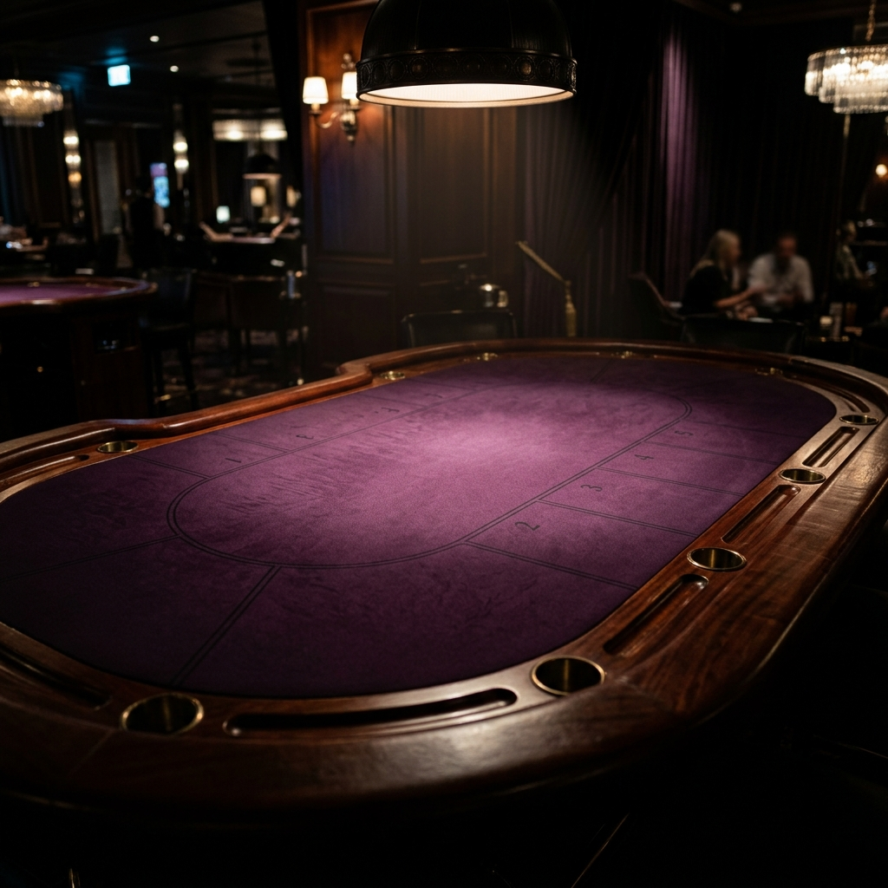

IL GRANDE MANUALE DI UNO FLIP! (C++)
Corso completo: Dall'Architettura al Codice, fino all'Intelligenza Artificiale
Questo documento non è un semplice riassunto. È un vero e proprio Libro di Testo scritto su misura per farti imparare tutto del tuo progetto. Partiremo dai concetti base, esploreremo le fondamenta architettoniche e poi vivisezioneremo ogni singolo file, riga per riga, per capire perché è stato scritto in quel modo. Alla fine, conoscerai ogni segreto del gioco, come pensa l'Intelligenza Artificiale e come abbiamo risolto i bug più distruttivi.
CAPITOLO 1: CONCETTI FONDAMENTALI
Prima di leggere il codice, dobbiamo assicurarci che tu conosca il vocabolario che useremo.
1. Il C++ Orientato agli Oggetti (OOP)
Tutto il progetto è basato su Classi e Oggetti.
- Una Classe è un "progetto" o una "fabbrica" (es. la classe Carta). Definisce cosa una carta è (Colore, Valore) e cosa può fare (metodo getColore()).
- Un Oggetto è l'entità fisica creata da quel progetto (es. quella specifica carta +5 Rossa che hai in mano).
- Incapsulamento: Nel file .h vedrai scritte le parole private: e public:. I dati vitali (come il colore di una carta) sono privati, così nessuno dall'esterno può modificarli per imbrogliare. Possono solo essere "letti" usando funzioni pubbliche (i famosi "Getter").
2. Strutture Dati: Il std::vector
Senza il std::vector, questo gioco non esisterebbe.
Un vettore in C++ è un array dinamico. A differenza degli array normali (int array[10]) che hanno una grandezza fissa, il vettore può allungarsi e accorciarsi a piacimento.
- mano.push_back(carta): Aggiunge una carta in coda alla mano del giocatore (il vettore si allarga).
- mano.erase(mano.begin() + indice): Rimuove una specifica carta e fa scivolare tutte le altre indietro per tappare il buco (il vettore si rimpicciolisce).
3. Cos'è SFML?
La Simple and Fast Multimedia Library (noi usiamo SFML 3) è il motore grafico. In C++ puro avremmo solo scritte bianche su sfondo nero (Terminale). SFML ci dà una Finestra (sf::RenderWindow), il supporto per i Suoni (sf::Sound), per le scritte (sf::Text) e per le immagini (sf::Texture e sf::Sprite).
Il cuore di SFML è il Game Loop: un ciclo while (window.isOpen()) che gira all'infinito 60 volte al secondo, intercettando se muovi il mouse e disegnando i pixel a schermo.
CAPITOLO 2: L'ARCHITETTURA (COME FUNZIONA TUTTO INSIEME)
Immagina un ristorante di lusso. C'è la Cucina (che prepara il cibo ma non vede mai i clienti) e ci sono i Camerieri (che parlano coi clienti e portano i piatti, ma non sanno cucinare).
Il Pattern MVC (Model - View - Controller)
Abbiamo strutturato il gioco esattamente così:
1. Il Modello (La Cucina): Sono le classi Partita, Carta, Mazzo, Giocatore. Loro sanno giocare a UNO Flip, sanno chi ha vinto e quali sono le regole. Ma non sanno cos'è uno schermo, un mouse o un colore rosso acceso in RGB.
2. La Vista e il Controller (I Camerieri): È la classe GameScene (grafica SFML). Lei sa disegnare bei bottoni, catturare i click del mouse e suonare effetti audio, ma è "stupida": non conosce le regole di UNO.
Come comunicano?
Quando clicchi col mouse su una carta, il Cameriere (GameScene) avvisa la Cucina (Partita): "Ehi, il giocatore ha cliccato la carta numero 2!". La Cucina elabora la mossa, cambia il turno, aggiorna le variabili interne. Al frame successivo (1/60esimo di secondo dopo), il Cameriere guarda in Cucina, vede che lo stato del tavolo è cambiato e ridisegna le carte a schermo nella nuova posizione. Questo previene il temuto "Spaghetti Code" (codice intrecciato in cui grafica e logica sono un pasticcio unico).
Lo State Pattern (Macchina a Stati)
Come facciamo a passare dal Menu alla Classifica, e poi al Gioco?
Usiamo lo State Pattern.
- Abbiamo un "Direttore", chiamato SceneManager. Lui possiede un "Palcoscenico" (un puntatore std::unique_ptr<Scene> currentScene).
- Tutte le schermate (MenuScene, LobbyScene, GameScene) sono "Attori" che ereditano da un'interfaccia base chiamata Scene.
- Quando sei nel menu e clicchi "Gioca", la MenuScene urla al Direttore: "Cambia Scena in GameScene!". Il Direttore distrugge letteralmente l'attore Menu dalla memoria RAM e crea al suo posto l'attore GameScene, cedendogli il controllo degli input del mouse. In questo modo solo una schermata per volta occupa la memoria e il processore.
Diagramma delle Classi UML
Ecco la mappa stellare di come tutte queste entità si incastrano tra loro a livello di codice:
CAPITOLO 3: ANATOMIA DEL CODICE LOGICO (Il Modello)
Andiamo a smontare ogni singolo file che gestisce le regole.
1. Carta.h e carta.cpp
Significato: È lo scheletro della singola carta giocabile.
- A differenza del normale gioco UNO, in UNO Flip la carta ha due lati fisici. Nel nostro codice, una singola istanza Carta memorizza simultaneamente il suo Lato Chiaro e il suo Lato Oscuro al momento della sua nascita (nel Costruttore).
// Esempio mentale: Una carta nasce con 4 valori
Carta miaCarta(ROSSO, UNO, ROSA, PESCA_CINQUE);
- I Getter Magici:
getColore(bool latoOscuro)egetValore(bool latoOscuro). QuandoPartitadeve controllare se la carta in mano è uguale a quella in terra, non chiede semplicemente "Che colore sei?", ma chiede "Che colore sei su questo lato?". La carta usa un costrutto ternario per rispondere in modo appropriato:
Colore Carta::getColore(bool latoOscuro) {
return latoOscuro ? coloreOscuro : coloreChiaro;
}
2. Mazzo.h e Mazzo.cpp
Significato: La fabbrica e il contenitore delle carte.
- carteDaPescare: Il vector che funge da pila coperta. Da qui togliamo le carte (pop_back()).
- carteScartate: Il vector dove appoggiamo le carte giocate. L'ultima di questo vettore (scarti.back()) è la famosa "Carta in Cima al Tavolo".
- Come si crea il Mazzo? In inizializzaMazzo(), usiamo dei cicli for nidificati. Iteriamo sui 4 colori, e per ogni colore iteriamo sui 9 numeri, aggiungendo al vettore 2 copie di ogni abbinamento chiaro/oscuro.
3. Partita.h e Partita.cpp
Significato: È l'Arbitro supremo. Contiene tutta la logica di UNO Flip.
Le variabili globali della partita sono:
- turnoCorrente: Un numero intero (es. 0 per Umberto, 1 per il Bot).
- sensoOrario: Un booleano. Se è vero il turno avanza (+1), se è falso retrocede (-1). Viene invertito dalla carta "Cambio Giro" (INVERTI).
- latoOscuroAttivo: Il cuore del gioco. Un booleano che, quando giocata la carta FLIP, diventa l'opposto di se stesso (latoOscuroAttivo = !latoOscuroAttivo).
- coloreAttivo: Di solito è il colore della carta sul tavolo. Ma quando si gioca un Jolly nero, il colore attivo diventa quello scelto dal giocatore.
Il Cuore: mossaValida(Carta c)
Come fa il gioco a sapere se puoi buttare una carta?
bool Partita::mossaValida(Carta c) {
// 1. Legge chi c'è sul tavolo (usando il lato attivo!)
Colore cCima = coloreAttivo;
Valore vCima = inCima.getValore(latoOscuroAttivo);
// 2. Legge la tua carta (usando il lato attivo!)
Colore cMano = c.getColore(latoOscuroAttivo);
Valore vMano = c.getValore(latoOscuroAttivo);
// 3. LA REGOLA D'ORO DI UNO:
// Puoi giocarla SE è Nera (Jolly), SE è dello stesso colore, O SE ha lo stesso simbolo/numero.
if (cMano == NERO || cMano == cCima || vMano == vCima) return true;
return false;
}

4. Database.h e Database.cpp
Significato: Gestisce la memoria a lungo termine (Classifica).
- Usa le librerie base di sistema C++ (<fstream>) per aprire un file .csv sul disco fisso.
- Legge ogni riga, la spezza in tre parti (Nome, Partite Giocate, Vittorie) usando il carattere virgola come separatore (getline(stream, stringa, ',')).
- Salva tutto in un vettore di struct Statistiche in memoria RAM.
- A fine partita, cerca il giocatore in RAM, fa vittorie + 1, ordina il vettore per vittorie decrescenti (std::sort), e infine riscrive l'intero file CSV sovrascrivendolo, affinché non si perda nulla spegnendo il computer.
CAPITOLO 4: L'ANATOMIA DELL'INTELLIGENZA ARTIFICIALE (AI / Bot)
Nel file Partita.cpp risiede il "cervello" dei nemici computerizzati: void Partita::mossaBot().
Non è un'Intelligenza Artificiale complessa in Machine Learning (che impara col tempo). È invece un'Intelligenza Artificiale procedurale basata su regole logiche, comunemente chiamata Algoritmo Greedy (Ingordo).
Cosa significa "Greedy"? Significa che il bot guarda lo stato attuale e compie la scelta che gli dà il massimo vantaggio istantaneo, senza pensare troppo al futuro. Ecco come pensa il bot, riga per riga:
1. Istinto di Sopravvivenza ("UNO!")
if (mano.size() == 2) ultimoLogBot = bot.getNome() + " grida: UNO!";
Il bot è programmato per non dimenticarsi mai di gridare UNO quando sta per rimanere con 1 carta. Questo evita che tu possa contestargli penalità.
2. Ricerca Armi di Distruzione (Scanning della mano)
int indiceGiocabile = -1;
for (int i=0; i<mano.size(); i++) {
if (mossaValida(mano[i])) {
Valore v = mano[i].getValore(latoOscuroAttivo);
// Cerco carte letali!
if (v==PESCA_CINQUE || v==SALTA_TUTTI || v==JOLLY_PESCA_COLORE) {
indiceGiocabile = i; break;
}
}
}
Il bot esamina le sue carte. Se ha una carta legale giocabile, controlla: "È una carta che infligge un danno pesante all'avversario?". Se trova un +5, la seleziona immediatamente interrompendo la ricerca (break;). L'IA predilige la cattiveria!
3. Ripiego (Piano B)
if (indiceGiocabile == -1) {
for (int i=0; i<mano.size(); i++) {
if (mossaValida(mano[i])) { indiceGiocabile = i; break; }
}
}
Se il bot non ha carte "cattive", fa un secondo giro. Cerca banalmente la prima carta legale disponibile.
4. Azione o Resa
Se ha trovato un indice (indiceGiocabile != -1), gioca la carta. Se quella carta è un Jolly, deve scegliere il nuovo colore attivo. Come fa?
int coloreScelto = Mazzo::ottieniNumeroCasuale() % 4;
Al momento estrae un numero casuale da 0 a 3, assegnando il colore in base all'estrazione.
Se non aveva alcuna carta valida, invoca mestamente la funzione bot.pescaCarta() e cede il turno.
CAPITOLO 5: RETI E MULTIPLAYER (IL NETWORKING)
Questa è una delle parti ingegneristicamente più difficili di tutto il progetto.
Cosa sono i Socket TCP?
In GestoreRete.cpp usiamo sf::TcpSocket. Un Socket è un "tubo" virtuale che collega due computer su Internet o sulla stessa rete Wi-Fi. TCP significa che il tubo garantisce che i messaggi arriveranno sempre in ordine e non andranno mai persi (a differenza del protocollo UDP, usato negli sparatutto, che sacrifica l'ordine per avere velocità estrema).
Il problema della Morte (Socket Bloccanti)
Normalmente, la riga socket.receive(pacchetto) mette in pausa l'intero programma finché l'avversario non ti manda un messaggio. Se il tuo amico va in bagno e non fa mosse per 5 minuti, il tuo schermo si blocca completamente e la rotellina del Mac inizia a girare (Application Not Responding).
La Soluzione: I Socket NON Bloccanti (Non-Blocking Sockets)
Abbiamo scritto questa riga magica nel costruttore:
socket.setBlocking(false);
Cosa cambia? Ora, quando il Game Loop del Mac chiama riceviMessaggio(), se il tubo è vuoto, SFML risponde "Non c'è niente!" e ritorna immediatamente il controllo al programma. Così il gioco può continuare a disegnare le carte, eseguire le animazioni e tenere i 60 FPS stabili, mentre in background la rete interroga continuamente il tubo (fenomeno noto come Asynchronous Polling).
Il Protocollo (La Lingua che parlano i PC)
Per far capire all'avversario cosa hai fatto, mandiamo semplici stringhe di testo separate da punto e virgola:
- Se clicchi la carta numero 2 ed è un jolly per cui scegli il colore giallo (indice 1), la rete costruisce la stringa: MOSSA;2;1;0 (L'ultimo 0 indica che non hai premuto il bottone "UNO").
- L'altro PC riceve la stringa, la spezza usando il ; e la trasforma in numeri interi (usando std::stoi()), convertendola nella chiamata equivalente: mossaRete(2, 1, false). Il tavolo si aggiorna magicamente da solo.
CAPITOLO 6: IL DIARIO DEI BUG (I MOSTRI CHE ABBIAMO SCONFITTO)
Qui scoprirai come "aggiustare un bug" spesso significhi riprogettare interi pezzi di matematica.
BUG #1: Il Paradosso di Mac vs Windows in Multiplayer
Il problema: Mettevamo il computer Apple a fare da Host e il PC Windows da Client. Il gioco partiva, ma Umberto sul Mac vedeva la carta centrale verde, mentre il professore su Windows la vedeva gialla! Le carte in mano erano totalmente sfasate. Il gioco era ingiocabile.
L'Indagine: All'inizio usavamo la funzione C++ standard std::shuffle combinata col motore random std::default_random_engine, passandogli lo stesso "seme" iniziale tramite rete (es. 999). Eravamo convinti che partendo da 999, le mischiate sarebbero state identiche. Sbagliato! La libreria libc++ di Apple Mac e la libreria libstdc++ di Microsoft implementano la casualità con formule diverse sotto il cofano.
La Soluzione: Abbiamo buttato il codice di libreria e abbiamo costruito a mano il nostro LCG (Generatore Congruenziale Lineare) nel file Mazzo.cpp.
uint32_t Mazzo::ottieniNumeroCasuale() {
// Numeri magici presi dal libro "Numerical Recipes"
seed_rete = seed_rete * 1664525 + 1013904223;
return seed_rete;
}
Questa è matematica elementare: moltiplicazione e addizione. Poiché è una formula pura, viene eseguita identica a livello di processore sia su chip Apple Silicon che Intel o AMD. Risultato? I mazzi su Mac e Windows si sono allineati al 100%.
BUG #2: La Pesca Infinita e la Paralisi del Turno
Il problema: Durante i test grafici, l'utente cliccava freneticamente sul mazzo coperto per pescare. Anziché dargli 1 carta e passare il turno al bot, il gioco gliene dava 20 di fila, svuotando il mazzo e senza mai cambiare turnoCorrente.
L'Indagine: Analizzando Partita::mossaUmano, il codice per la pescata (indiceCarta == -1) faceva bot.pescaCarta() e poi un brusco return;. La funzione terminava prematuramente prima di raggiungere il blocco finale dove il turno passava fisicamente al giocatore successivo!
La Soluzione:
if (indiceCarta == -1) {
giocatori[turnoCorrente].pescaCarta(mazzo.pesca());
passaTurno(); // FIX: Aggiunta questa riga per forzare il passaggio!
return;
}
In questo modo, la pescata sigilla inequivocabilmente il turno.
BUG #3: Il Letale "Jolly Grigio" sotto al Flip
Il problema: Scartavi una carta FLIP. Tutto andava bene, il tavolo diventava oscuro. Ma se mesi prima, in fondo alla pila, era stata giocata una carta JOLLY (il cui colore base hardware è la costante numerica "NERO"), il gioco impazziva. La funzione applicaEffettoCarta vedeva che sotto al FLIP c'era un colore NERO e lo impostava come coloreAttivo. Nessuno poteva più giocare carte, perché il "nero" non è giocabile!
L'Indagine: Il Flip normalmente guarda la carta in cima e ne copia il colore. Ma non ci eravamo accorti che i Jolly, privi di colore base, non avrebbero dovuto tramandare il loro attributo NERO alle carte Flip sovrapposte.
La Soluzione: Modificammo pesantemente la logica di FLIP introducendo un ricalcolo d'emergenza, un sistema di "fallback":
Colore nuovoColore = c.getColore(latoOscuroAttivo);
if (nuovoColore == NERO) {
// Se il tavolo era magicamente diventato Nero, forziamo il Caso!
int r = Mazzo::ottieniNumeroCasuale() % 4;
Colore oscuri[] = {ROSA, VERDE_ACQUA, ARANCIONE, VIOLA};
coloreAttivo = oscuri[r];
} else {
coloreAttivo = nuovoColore;
}
Il sistema ora percepisce la singolarità del Jolly, lo annulla e fa "rollare" al computer un dado invisibile a 4 facce per inventarsi un colore legale, salvando la partita dal congelamento.
CURIOSITÀ E ANEDDOTI DI SVILUPPO
- Il Design dei Suoni: Tutti gli effetti audio (
.wav) sono gestiti pre-caricando i buffer in RAM all'inizio della partita. Lo sapevi che quando si gioca una carta molto "cattiva" (come il +5 Oscuro) il sistema usa lo stessoSoundManagerma la gravità percepita dai giocatori cambia totalmente l'atmosfera? - 60 FPS Limitati: A un certo punto dello sviluppo abbiamo dovuto limitare esplicitamente il framerate (
window.setFramerateLimit(60)), perché altrimenti nei PC molto potenti (come i Mac M1/M2) il ciclo while impazziva, girando e disegnando il tavolo a 4000 frame al secondo, facendo surriscaldare e decollare la CPU! - L'origine di UNO Flip: Rispetto all'UNO classico, il Flip richiede il doppio dei controlli della logica. Inizialmente volevamo implementare due mazzi separati (uno chiaro e uno scuro), ma poi abbiamo avuto un'epifania: la carta fisica è letteralmente una sola che possiede semplicemente due facce. Abbiamo unito tutto nella classe
Cartae creato la variabile "latoOscuroAttivo", risparmiando centinaia di righe di codice inutile!
Manuale Didattico Generato Integralmente. Impara ogni riga e stupisci all'esame!